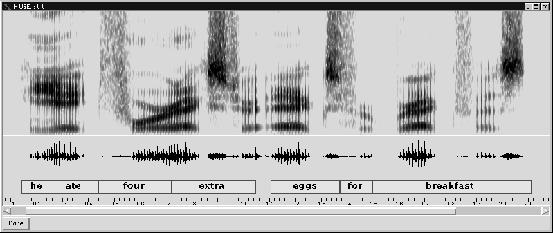

Problem Set 8
Streams and Speech Recognition
In lecture on March 31, we looked at streams and at some of the computational approaches that are associated with these data structures. We saw that the key concept behind streams was to decouple the apparent order of evaluation of expressions from the actual order evaluation in the computer. By doing so, we can execute processes without having to first generate all the stream elements. This is a useful variation on our earlier approaches to computation. There are many applications that are naturally viewed in terms of processing continuous sequences (or streams) of values (e.g. electrical signals, sonar, radar, sound, etc.).
Consider speech recognition. The input to a speech recognizer might be a stream of frequencies based on the interaction of sound waves generated by the speaker with some receiver (e.g. a taut drum that converts wave fronts to vibrations that can be converted to an electrical signal). The goal is to convert the electrical signal that represents the sound waves into words. In traditional approaches to speech recognition, there is an intermediate step in which the stream of vibrations is first converted into subunits of actual spoken words, called phonemes. These represent the units of sound that comprise spoken words.
For example, figure 1 shows a sample speech input.

Figure 1:
The picture illustrates three useful representations for human speech
during computer speech recognition. The top display results from the
short-time Fourier analysis of the speech signal and depicts the
varying distribution of spectral energy across time and frequency
(darker means more energy). The next display is the amplitude of the
waveform, recorded and digitized at 16,000 samples per second.
Finally, the transcription shows which words were actually spoken, and
their corresponding alignments in time (the time axis is measured in
seconds).
Speech recognition would be simple if there was a clear transformation from vibrations to phonemes, and then to words. Unfortunately, in most normal situations, the speech signal is noisyand ambiguous. This means first that the interpretation of the vibration stream into phonemes is not clearcut--there may be several phonemes that could correspond to the detected vibrations. Second, the breaks between words may not be clear, so that one has to worry about where to separate the boundaries of the phonemes. Indeed, in the example shown in the figure, there is no obvious silence or gap between ``he'' and ``ate''. Because of these phenomena, building good speech-recognition systems is very difficult.